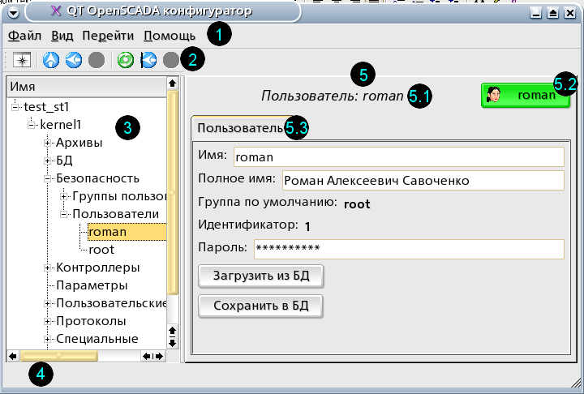
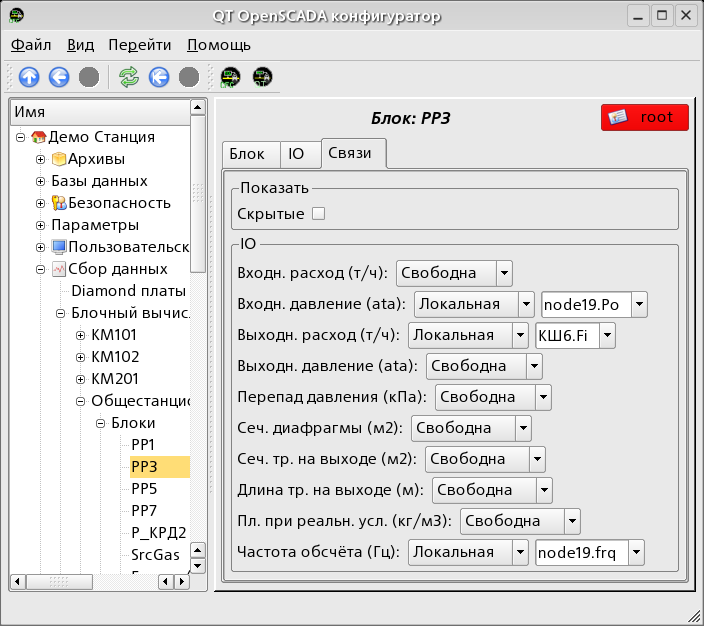
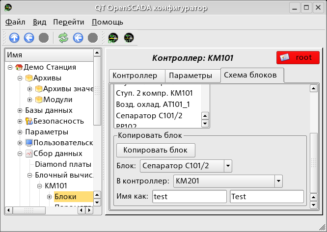
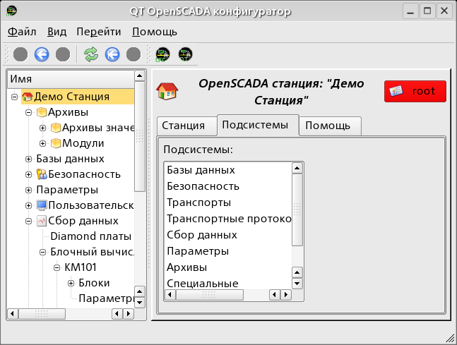
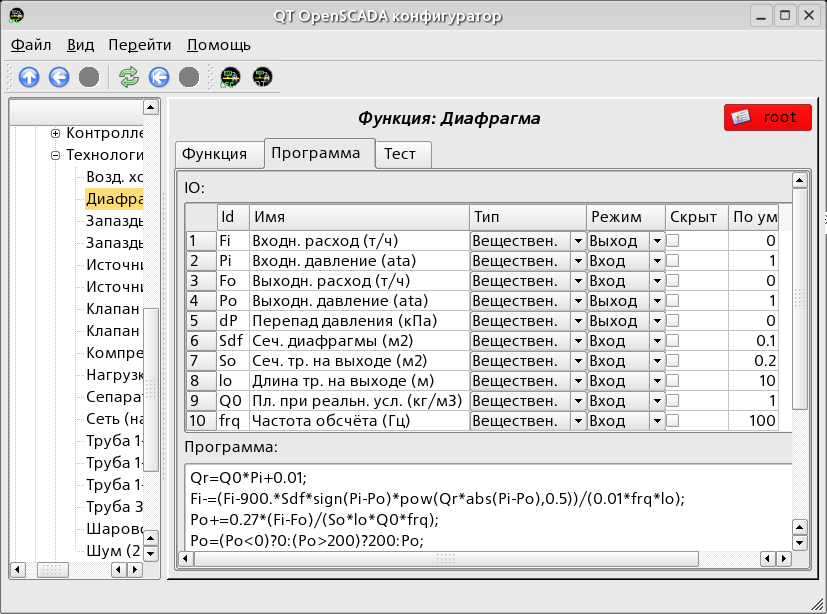

Предоставляет основанный на QT конфигуратор системы OpenSCADA.
Лицензия:
GPL
Введение
Модуль <QTCfg> предоставляет конфигуратор системы OpenSCADA.
Конфигуратор реализован на основе многоплатформенной библиотеки
графического пользовательского интерфейса (GUI) фирмы TrollTech –
QT <http://www.trolltech.com/qt/>.
В основе модуля лежит язык интерфейса управления системой
OpenSCADA, а значит предоставляется единый интерфейс конфигурации.
Обновление модуля может потребоваться только в случае обновления
спецификации языка интерфейса управления.
Рассмотрим рабочее окно конфигуратора на рис. 1.

Рис.1. Рабочее окно конфигуратора
Рабочее окно конфигуратора состоит из следующих частей:
1 – Меню. Содержит выпадающее меню конфигуратора.
2 – Тулбар. Содержит кнопки быстрого управления.
3 – Навигатор. Предназначен для прямой навигации по дереву управления.
4 – Строка статуса. Отображение состояний конфигуратора.
5 – Рабочее поле. Поделено на части:
5.1 – Имя узла. Содержит имя текущего узла.
5.2 – Кнопка выбора пользователя. Отображает текущего пользователя.
По нажатию на кнопку открывается диалог выбора пользователя.
5.3 – Табулятор рабочих областей. В табулятор помещаются корневые
страницы (области управления) узла. Области управления следующих
уровней помещаются на информационные панели.
Элементы управления делятся на базовые, команды, списки, таблицы
и изображения. Все элементы отображаются
в последовательности строго соответствующей их расположению
в описании языка интерфейса управления.
1 Базовые элементы
В число базовых элементов входят: информационные элементы, поля
ввода значений, элементы выбора из списка, флаги. В случае
отсутствия имени элемента, базовый элемент стыкуется к предыдущему
базовому элементу. Пример группы базовых элементов со стыковкой
приведён на рис.2.

Рис.2. Стыковка базовых элементов.
2 Команды
Команды это элементы для передачи определённых указаний
действия узлу и организации ссылок на страницы. Команды могут
содержать параметры. Параметры формируются из базовых элементов.
Пример команды с параметрами приведен на рис.3.

Рис.3. Команда.
3 Списки
Списки содержат группу базовых элементов одного типа. Операции
над элементами доступны через контекстное меню списка. Через
элементы списка могут выполняться операции перехода на другие
страницы. Переход осуществляется посредством двойного клика мышки
на элементе списка. Списки могут быть индексированными. Пример
списка приведен на рис. 4.

Рис.4. Список.
4 Таблицы
Таблицы содержат значения базовых элементов. Тип базового элемента
является индивидуальным для каждой колонки. Пример таблицы
приведен на рис. 5.

Рис.5. Таблица.
5 Изображения
Изображения призваны передавать графическую информацию в конфигураторы. Пример таблицы приведен на рис. 6.
")